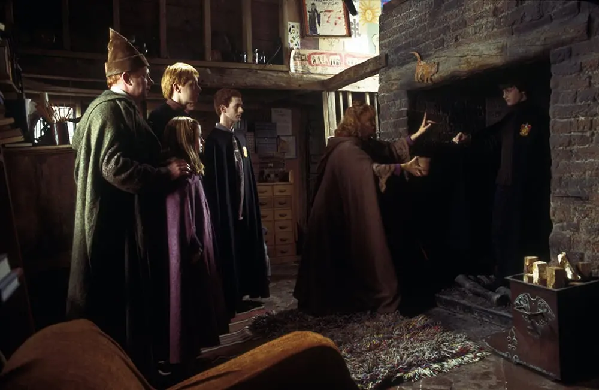

<ion-content [fullscreen]="true">
  <div class="root">
     <div class="root-inner">
      <div class="image-con">
        
       </div>
       <div class="content">
        <h2 class="title">Oh dear. Are you lost?</h2>
        <p class="sub-title">Come back in a little while or return to the homepage.</p>
      </div>
      <a routerLink="/home" class="home-button">BACK TO WIZARDING WORLD</a>
     </div>
  </div>
</ion-content>